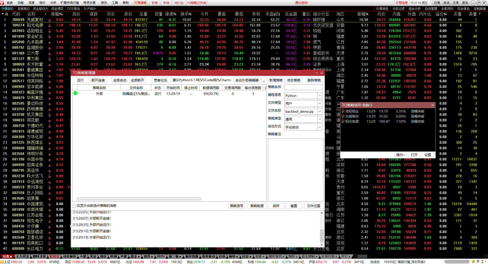

# 订阅行情涨幅突破实时预计
# 第一步：设置预警条件，并发送预警结果到客户端
#订阅板块成分股行情，涨幅突破实时预警，首次突破后取消该证券行情订阅监控
import json
import time
import signal
import sys
from datetime import datetime, timedelta
from collections import defaultdict
from tqcenter import tq
# ===================== 全局配置 =====================
# 板块配置：支持多个板块/自定义板块
SECTOR_NAMES = ['通达信88'] # 可扩展为其他板块名称或代码
PRICE_RISE_THRESHOLD = 5.0 # 涨幅阈值>5%
ANTI_SHAKE_SECONDS = 10 # 防抖间隔
BATCH_SUBSCRIBE_SIZE = 50 # 分批订阅大小（避免单次订阅过多）
# 全局变量
SUBSCRIBE_CODES = [] # 动态获取的监控股票列表
last_warn_time = defaultdict(int)
EXIT_FLAG = False
TRIGGERED_STOCKS = set() # 记录已首次触发预警的股票（避免重复监控/推送）
# ===================== 信号处理函数 =====================
def signal_handler(signum, frame):
"""处理Ctrl+C（SIGINT）信号"""
global EXIT_FLAG
print(f"\n\n[{datetime.now().strftime('%H:%M:%S')}] 接收到退出信号（Ctrl+C），开始清理资源...")
EXIT_FLAG = True
# 强制取消订阅+关闭TDX
try:
unsubscribe_stocks()
except Exception as e:
print(f"取消订阅失败：{e}")
print("资源清理完成，程序退出！")
sys.exit(0)
# ===================== 工具函数（新增） =====================
def get_valid_stock_codes(sector_names):
"""
从指定板块获取有效股票代码列表
:param sector_names: 板块名称列表
:return: 去重后的有效股票代码列表
"""
valid_codes = set() # 用集合去重
for sector in sector_names:
try:
# 获取板块股票列表（TDX初始化后调用）
sector_codes = tq.get_stock_list_in_sector(sector)
if not sector_codes:
print(f"[{datetime.now().strftime('%H:%M:%S')}] 警告：板块{sector}未获取到股票列表")
continue
# 过滤无效代码（空值、格式错误）
for code in sector_codes:
if code and isinstance(code, str) and (code.endswith('.SH') or code.endswith('.SZ')):
valid_codes.add(code)
else:
print(f"[{datetime.now().strftime('%H:%M:%S')}] 过滤无效代码：{code}")
except Exception as e:
print(f"[{datetime.now().strftime('%H:%M:%S')}] 获取板块{sector}股票列表失败：{e}")
import traceback
traceback.print_exc()
# 转为列表并排序
valid_codes_list = sorted(list(valid_codes))
print(f"[{datetime.now().strftime('%H:%M:%S')}] 从板块{sector_names}获取到有效股票{len(valid_codes_list)}只：{valid_codes_list[:10]}...") # 只打印前10个
return valid_codes_list
def batch_subscribe(stocks, batch_size):
"""
分批订阅股票（避免单次订阅过多）
:param stocks: 股票列表
:param batch_size: 每批订阅数量
:return: 整体订阅结果（True/False）
"""
total_success = True
for i in range(0, len(stocks), batch_size):
batch = stocks[i:i+batch_size]
try:
print(f"\n[{datetime.now().strftime('%H:%M:%S')}] 订阅第{i//batch_size + 1}批股票（{len(batch)}只）：{batch[:5]}...")
sub_res = tq.subscribe_hq(stock_list=batch, callback=price_rise_callback)
if not sub_res:
print(f"[{datetime.now().strftime('%H:%M:%S')}] 第{i//batch_size + 1}批订阅失败：{sub_res}")
total_success = False
else:
print(f"[{datetime.now().strftime('%H:%M:%S')}] 第{i//batch_size + 1}批订阅成功：{sub_res}")
except Exception as e:
print(f"[{datetime.now().strftime('%H:%M:%S')}] 第{i//batch_size + 1}批订阅异常：{e}")
total_success = False
return total_success
def unsubscribe_single_stock(stock_code):
"""
取消单只股票的订阅（首次触发后不再监控）
:param stock_code: 股票代码
:return: 取消结果（True/False）
"""
try:
un_sub_res = tq.unsubscribe_hq(stock_list=[stock_code])
if un_sub_res:
# 从全局订阅列表中移除
if stock_code in SUBSCRIBE_CODES:
SUBSCRIBE_CODES.remove(stock_code)
return True
return False
except Exception as e:
print(f"[{datetime.now().strftime('%H:%M:%S')}] 取消{stock_code}订阅失败：{e}")
return False
# ===================== 核心回调函数 =====================
def price_rise_callback(data_str):
try:
code_json = json.loads(data_str)
code = code_json.get('Code')
# 前置过滤：无效数据/非监控股票/已触发过的股票（直接返回，不输出日志）
if (code_json.get('ErrorId') != "0" or not code) or \
(code not in SUBSCRIBE_CODES) or \
(code in TRIGGERED_STOCKS):
return
# 获取最新行情数据
report_ptr = tq.get_full_tick(code)
latest_price = 0.0
pre_close = 0.0
if report_ptr:
latest_price = round(float(report_ptr['Now']), 2)
pre_close = round(float(report_ptr['LastClose']), 2)
if pre_close <= 0 and latest_price > 0:
pre_close = latest_price - 0.01
# 过滤最新价/昨收价无效的情况
if latest_price <= 0 or pre_close <= 0:
return
# 计算涨幅
rise_rate = round(((latest_price - pre_close) / pre_close) * 100, 2) if pre_close > 0 else 0.0
# 仅处理满足涨幅阈值+防抖的情况
if rise_rate > PRICE_RISE_THRESHOLD:
current_time = int(time.time())
if current_time - last_warn_time[code] < ANTI_SHAKE_SECONDS:
return
# 标记为已触发，后续不再处理
TRIGGERED_STOCKS.add(code)
last_warn_time[code] = current_time
# 取消该股票的订阅（不再监控）
unsubscribe_single_stock(code)
# 发送预警
warn_time = datetime.now().strftime("%Y%m%d%H%M%S")
reason = (
f"涨幅突破"
)
try:
# 成交量用实际值，无则填0
volume = report_ptr.get('Volume', '0') if report_ptr else '0'
warn_res = tq.send_warn(
stock_list=[code],
time_list=[warn_time],
price_list=[str(latest_price)],
close_list=[str(pre_close)],
volum_list=[volume],
bs_flag_list=['0'],
warn_type_list=['3'],
reason_list=[reason],
count=1
)
print(f"[{datetime.now().strftime('%H:%M:%S')}] {reason}")
print(f"[{datetime.now().strftime('%H:%M:%S')}] 预警发送结果：{warn_res}")
print(f"[{datetime.now().strftime('%H:%M:%S')}] 已取消{code}订阅，后续不再监控")
except Exception as e:
print(f"\n[{datetime.now().strftime('%H:%M:%S')}] {code} 发送预警失败：{e}")
except Exception as e:
print(f"\n[{datetime.now().strftime('%H:%M:%S')}] 回调函数执行异常：{e}")
import traceback
traceback.print_exc()
return None
# ===================== 订阅/取消订阅函数=====================
def subscribe_stocks():
"""订阅股票（分批订阅+容错）"""
if not SUBSCRIBE_CODES:
print(f"\n[{datetime.now().strftime('%H:%M:%S')}] 无有效股票可订阅，跳过订阅流程")
return False
print(f"\n开始批量订阅股票（总计{len(SUBSCRIBE_CODES)}只）")
sub_result = batch_subscribe(SUBSCRIBE_CODES, BATCH_SUBSCRIBE_SIZE)
print(f"批量订阅最终结果：{'成功' if sub_result else '部分/全部失败'}")
return sub_result
def unsubscribe_stocks():
"""取消订阅（分批取消）"""
if not SUBSCRIBE_CODES:
print(f"\n[{datetime.now().strftime('%H:%M:%S')}] 无已订阅股票，跳过取消订阅流程")
return False
print(f"\n开始批量取消订阅股票（总计{len(SUBSCRIBE_CODES)}只）")
total_success = True
for i in range(0, len(SUBSCRIBE_CODES), BATCH_SUBSCRIBE_SIZE):
batch = SUBSCRIBE_CODES[i:i+BATCH_SUBSCRIBE_SIZE]
try:
print(f"取消第{i//BATCH_SUBSCRIBE_SIZE + 1}批订阅：{batch[:5]}...")
un_sub_ptr = tq.unsubscribe_hq(stock_list=batch)
if not un_sub_ptr:
print(f"第{i//BATCH_SUBSCRIBE_SIZE + 1}批取消失败：{un_sub_ptr}")
total_success = False
except Exception as e:
print(f"第{i//BATCH_SUBSCRIBE_SIZE + 1}批取消异常：{e}")
total_success = False
print(f"批量取消订阅最终结果：{'成功' if total_success else '部分/全部失败'}")
return total_success
# ===================== 主程序 =====================
if __name__ == "__main__":
# 注册SIGINT信号处理（优先于默认的KeyboardInterrupt）
signal.signal(signal.SIGINT, signal_handler)
# 1. 初始化TDX（仅执行1次，无重试）
try:
tq.initialize(__file__)
print(f"程序启动时间：{datetime.now().strftime('%Y-%m-%d %H:%M:%S')}")
print(f"TDX初始化成功")
except Exception as e:
print(f"TDX初始化失败：{e}")
exit(1)
# 2. 获取板块股票列表
SUBSCRIBE_CODES = get_valid_stock_codes(SECTOR_NAMES)
if not SUBSCRIBE_CODES:
print("未获取到任何有效股票代码，程序退出")
exit(1)
# 3. 订阅股票
subscribe_stocks()
# 4. 运行提示
print(f"\n=== 涨幅监控启动 ===")
print(f"监控板块：{SECTOR_NAMES}")
print(f"监控股票总数：{len(SUBSCRIBE_CODES)}")
print(f"涨幅阈值：>{PRICE_RISE_THRESHOLD}%")
print(f"防抖间隔：{ANTI_SHAKE_SECONDS}秒")
print(f"分批订阅大小：{BATCH_SUBSCRIBE_SIZE}只/批")
print("按 Ctrl+C 退出程序...\n")
# 5. 通过全局标记控制退出
try:
while not EXIT_FLAG:
time.sleep(0.1)
except Exception as e:
print(f"主循环异常：{e}")
# 兜底清理
unsubscribe_stocks()
1
2
3
4
5
6
7
8
9
10
11
12
13
14
15
16
17
18
19
20
21
22
23
24
25
26
27
28
29
30
31
32
33
34
35
36
37
38
39
40
41
42
43
44
45
46
47
48
49
50
51
52
53
54
55
56
57
58
59
60
61
62
63
64
65
66
67
68
69
70
71
72
73
74
75
76
77
78
79
80
81
82
83
84
85
86
87
88
89
90
91
92
93
94
95
96
97
98
99
100
101
102
103
104
105
106
107
108
109
110
111
112
113
114
115
116
117
118
119
120
121
122
123
124
125
126
127
128
129
130
131
132
133
134
135
136
137
138
139
140
141
142
143
144
145
146
147
148
149
150
151
152
153
154
155
156
157
158
159
160
161
162
163
164
165
166
167
168
169
170
171
172
173
174
175
176
177
178
179
180
181
182
183
184
185
186
187
188
189
190
191
192
193
194
195
196
197
198
199
200
201
202
203
204
205
206
207
208
209
210
211
212
213
214
215
216
217
218
219
220
221
222
223
224
225
226
227
228
229
230
231
232
233
234
235
236
237
238
239
240
241
242
243
244
245
246
247
248
249
250
251
252
253
254
255
256
257
258
259
260
261
262
263
264
2
3
4
5
6
7
8
9
10
11
12
13
14
15
16
17
18
19
20
21
22
23
24
25
26
27
28
29
30
31
32
33
34
35
36
37
38
39
40
41
42
43
44
45
46
47
48
49
50
51
52
53
54
55
56
57
58
59
60
61
62
63
64
65
66
67
68
69
70
71
72
73
74
75
76
77
78
79
80
81
82
83
84
85
86
87
88
89
90
91
92
93
94
95
96
97
98
99
100
101
102
103
104
105
106
107
108
109
110
111
112
113
114
115
116
117
118
119
120
121
122
123
124
125
126
127
128
129
130
131
132
133
134
135
136
137
138
139
140
141
142
143
144
145
146
147
148
149
150
151
152
153
154
155
156
157
158
159
160
161
162
163
164
165
166
167
168
169
170
171
172
173
174
175
176
177
178
179
180
181
182
183
184
185
186
187
188
189
190
191
192
193
194
195
196
197
198
199
200
201
202
203
204
205
206
207
208
209
210
211
212
213
214
215
216
217
218
219
220
221
222
223
224
225
226
227
228
229
230
231
232
233
234
235
236
237
238
239
240
241
242
243
244
245
246
247
248
249
250
251
252
253
254
255
256
257
258
259
260
261
262
263
264
# 第二步：打开通达信金融终端查看运行结果
通达信金融终端

← 执行选股入板块 计算调仓信号并快速买卖 →